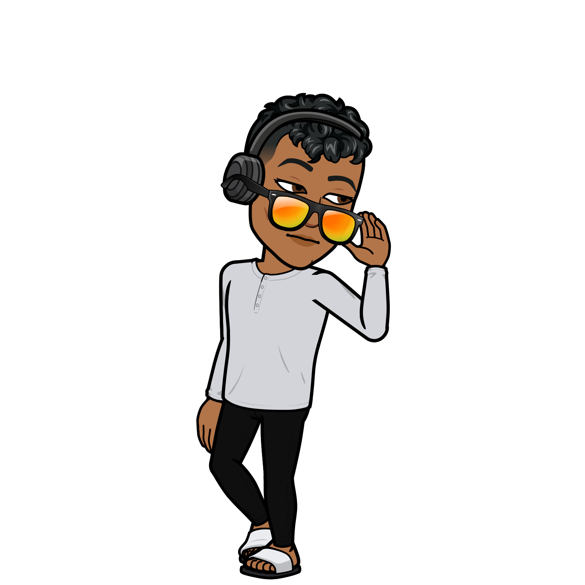
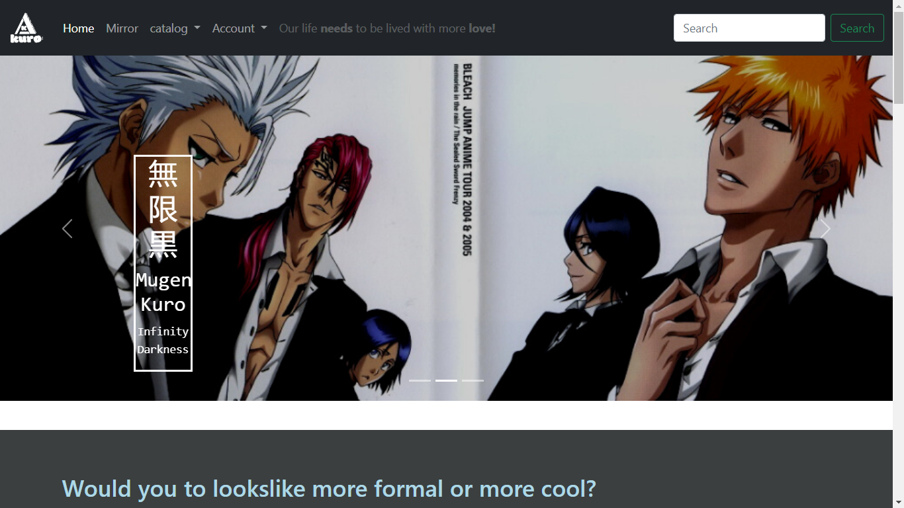
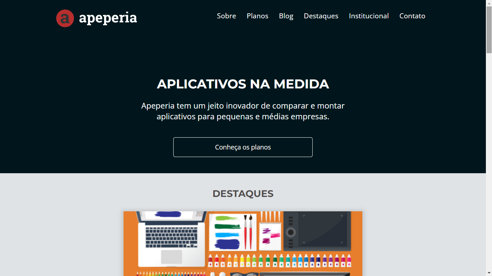
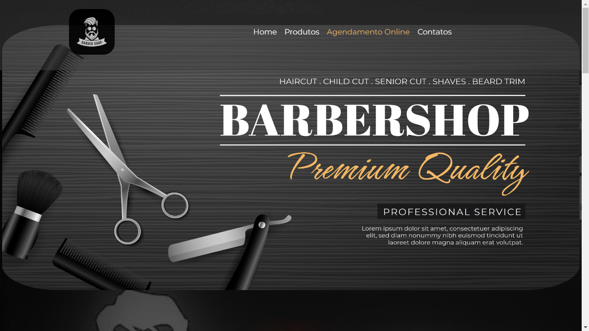
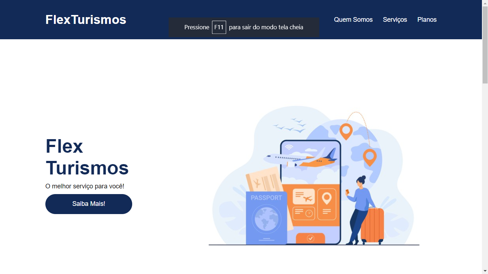
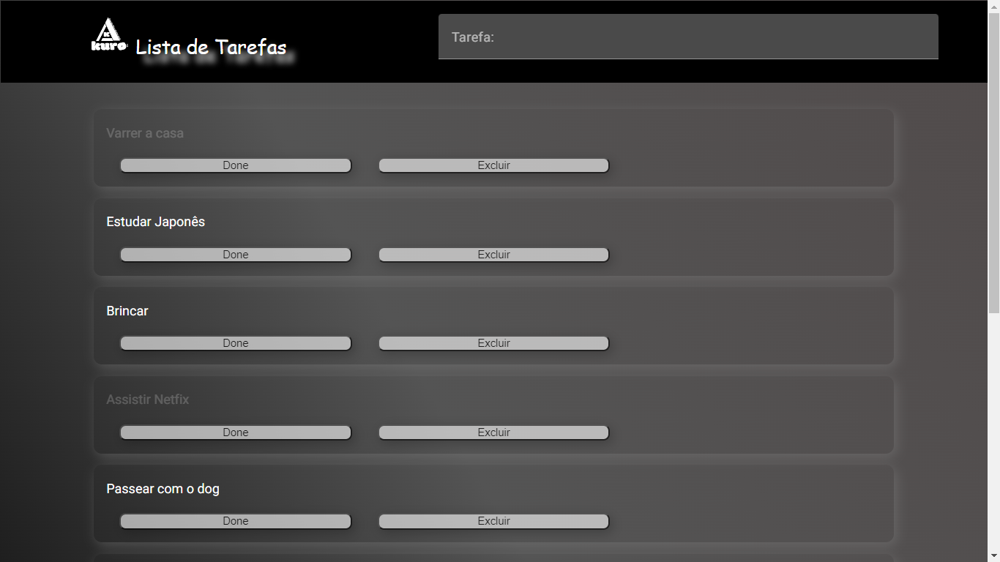

<div>
  <div #body class="ligth-primary full_screen">
    <!-- <app-header [(mode)]="value"></app-header> -->

    <nav
      class="navbar ligth-primary"
      role="navigation"
      aria-label="Navegação Principal"
    >
      <div class="column">
        <div class="navbar-brand">
          <a
            class="navbar-item ligth-primary"
            aria-label="cardápio"
            href="/"
          >
            Mr. Kuro
          </a>

          <button
            type="button"
            class="navbar-menu-icon ligth-secondary navbar-item"
            (click)="changeIcon()"
            #displaymode
          >
            <mat-icon
              aria-label="Example display mode icon"
              fontIcon="light_mode"
            >
            </mat-icon>
          </button>

          <button
            type="button"
            class="navbar-menu-icon ligth-secondary navbar-item"
            #menu_button
            (click)="displayMenu()"
          >
            <mat-icon aria-label="Example menu icon" fontIcon="menu"
              >menu
            </mat-icon>
          </button>
        </div>

        <div class="navbar-menu" #navMenu [hidden]="!isHidden">
          <div class="navbar-end">
            <a
              target="_blank"
              class="navbar-item ligth-primary"
              href="https://github.com/Mr-Kuro"
              >Github
            </a>
          </div>
          <div class="navbar-end">
            <a
              target="_blank"
              class="navbar-item ligth-primary"
              href="https://www.linkedin.com/in/mr-kuro/"
              >Linkedin
            </a>
          </div>
        </div>
      </div>
    </nav>

    <div class="hero-body ligth-primary">
      <div class="container">
        <div class="column">
          <h1
            class="title is-spaced is-size-1-desktop is-size-tablet is-size-3-mobile"
          >
            Fullstack Developer
          </h1>
          <h2 class="subtitle is-size-tablet">
            Minha paixão desenvolver projetos e codigos slim.
          </h2>
          
        </div>
      </div>
    </div>

    <section class="ligth-primary">
      <div class="container ligth-primary">
        
      </div>
    </section>

    <section class="ligth-primary section is-medium is-primary has-text-centered is-long"
    >
      <div class="container ligth-secondary">
        <div class="columns is-centered">
          <div class="column">
            <h1 class="title is-spaced is-size-3-desktop is-size-4-mobile">
              Yo! sou o Anderson, prazer em conhecê-lo!
            </h1>
            <h3 class="big-text is-size-5-desktop has-text-weight-normal">
              Desde que comecei minha jornada como desenvolvedor, há cerca de de
              2 anos, fiz trabalhos de têmperas educacionais e pessoais em
              diversos ninchos. Para agências de viagens, barbearias, oficinas e
              gamers. <br /><br />
              Todos os projetos tiveram cunho didático no contexto de empresas
              fictícias, afim de ganhar experiências de desenvolvimento prático.
              Trabalhei com pessoas talentosas para criar Web Aplications e
              Desktop Aplications para uso comercial e do consumidor.<br /><br />
              Sou silenciosamente confiante, naturalmente curioso e sempre
              trabalhando para melhorar minhas habilidades.
              <h5>Um problema de código por vez!</h5>
            </h3>
          </div>
        </div>
      </div>
    </section>

    <section class="section ligth-primary skills has-text-centered">
      <div class="container is-narrow">
        <div class="box">
          <div class="content">
            <div class="columns is-centered">
              <div class="column normal-text">
                <h1 class="title is-size-4 is-spaced">
                  Desenvolvedor Fullstack
                </h1>
                <p>
                  Gosto de codificar coisas do zero e gosto de dar vida às
                  ideias no navegador. Valorizo uma estrutura de conteúdo
                  simples, padrões de design limpos e interações inteligentes.
                </p>
                <p class="subtitle has-text-primary has-text-weight-normal">
                  Idiomas que falo:
                </p>
                <p class="project-grid">
                  <i class="languege-icon devicon-html5-plain colored"></i>
                  <i class="languege-icon devicon-css3-plain colored"></i>
                  <i class="languege-icon devicon-javascript-plain colored"></i>
                  <i class="languege-icon devicon-typescript-plain colored"></i>
                  <i class="languege-icon devicon-java-plain colored"></i>
                  <i class="languege-icon devicon-git-plain colored"></i>
                  <i class="languege-icon devicon-python-plain colored"></i>
                  <i class="languege-icon devicon-mysql-plain colored"></i>
                </p>
                <p class="subtitle has-text-primary has-text-weight-normal">
                  Ferramentas de desenvolvimento:
                </p>
                <ul>
                  <li>Angular CLI</li>
                  <li>Angular Material</li>
                  <li>VS code</li>
                  <li>Spring Boot</li>
                  <li>Github</li>
                  <li>IntelliJ IDEA</li>
                  <li>Workbench</li>
                  <li>SQL</li>
                  <li>Vercel</li>
                </ul>

                <p class="subtitle has-text-primary has-text-weight-normal">
                  Coisas que gosto de desenhar:
                </p>
                <p>UX, interface do usuário, Web, Web aplicativos, logotipos</p>
                <p class="subtitle has-text-primary has-text-weight-normal">
                  Ferramentas de projeto:
                </p>
                <ul>
                  <li>Designer de afinidade</li>
                  <li>figma</li>
                  <li>Fonte Incrível</li>
                  <li>Caneta e Papel</li>
                  <li>Esboço</li>
                  <li>Wireframes</li>
                </ul>
              </div>
            </div>
          </div>
        </div>
      </div>
    </section>

    <section class="section ligth-accent projects is-medium is-white has-text-centered"
    >
      <div class="container is-narrow ligth-primary">
        <h1 class="title column is-spaced is-size-3-desktop is-size-4-mobile">
          Meus Trabalhos Recentes
        </h1>

        <h2 class="big-text column is-size-5-desktop">
          Alem deste, aqui estão alguns outros projetos que desenvolvi
          anteriormente. Quer ver mais?
          <a
            type="e-mail"
            class="has-text-weight-normal"
            href="mailto:queirozanderson@467@gmail.com"
            >Envie-me um e-mail</a
          >.
        </h2>

        <div class="project-grid">
          <!-- <div class="columns is-multiline is-mobile"> -->
          <div class="column is-12-mobile is-half-tablet is-one-third-desktop">
            <figure class="image is-3by2">
              
              <figcaption class="no-display" #figcaption1 id="1">
                <h1 class="big-text is-size-5 is-size-4-widescreen">
                  Mugen Kuro, esste foi o meu primeiro site. Ele é inspirado no
                  <a
                    target="_blank"
                    href="https://sites.google.com/view/mugenkuro/%E3%83%9B%E3%83%BC%E3%83%A0home"
                    ><small>無限黒 Mugen Kuro</small></a
                  >, um outro site feito no google sites.
                </h1>
                <a
                  class="button is-primary is-outlined is-rounded"
                  href="https://mugenkuro.vercel.app/"
                  target="_blank"
                >
                  <span>Visite o site</span>
                </a>
              </figcaption>
              <div class="overlay"></div>
            </figure>
          </div>

          <div
            class="column is-12-mobile is-half-tablet is-one-third-desktop border-threeColor"
          >
            <figure class="image is-3by2">
              
              <figcaption class="no-display" #figcaption2 id="2" [id]="2">
                <h1 class="big-text is-size-5 is-size-4-widescreen">
                  A Apeperia foi um projeto de curso construído para ser
                  totalmente responsivo. Ele conta com 'media-queries', flexbox
                  e grid.
                </h1>
                <a
                  class="button is-primary is-outlined is-rounded"
                  href="https://apeperia-responsiva.vercel.app/"
                  target="_blank"
                >
                  <span>Visite o site</span>
                </a>
              </figcaption>
              <div class="overlay"></div>
            </figure>
          </div>

          <div
            class="column is-12-mobile is-half-tablet is-one-third-desktop border-threeColor"
          >
            <figure class="image is-3by2">
              
              <figcaption class="no-display" #figcaption3 id="3" [id]="3">
                <h1 class="big-text is-size-5 is-size-4-widescreen">
                  A EBJ Barbearia é o início de um projeto de longo prazo. Ele
                  tem como obijetivo, suprir as necessidades de visibilidade e
                  automatizar o agendamento de horários para os clientes da
                  barbearia.
                </h1>
                <a
                  class="button is-primary is-outlined is-rounded"
                  href="https://ebj-barbearia.vercel.app/"
                  target="_blank"
                >
                  <span>Visite o site</span>
                </a>
              </figcaption>
              <div class="overlay"></div>
            </figure>
          </div>

          <div
            class="column is-12-mobile is-half-tablet is-one-third-desktop border-threeColor"
          >
            <figure class="image is-3by2">
              
              <figcaption class="no-display" #figcaption4 id="4" [id]="4">
                <h1 class="big-text is-size-5 is-size-4-widescreen">
                  O FlexTurismos é um site front end. Na linha do tempo atual, ele
                  foi meu segundo projeto. Foi desenvolvido com fim de
                  aperfeiçoar minhas abilidades de desktop-web-aplications
                </h1>
                <a
                  class="button is-primary is-outlined is-rounded"
                  href="https://flex-turism.vercel.app/"
                  target="_blank"
                >
                  <span>Visite o site</span>
                </a>
              </figcaption>
              <div class="overlay"></div>
            </figure>
          </div>

          <div
            class="column is-12-mobile is-half-tablet is-one-third-desktop border-threeColor"
          >
            <figure class="image is-3by2">
              
              <figcaption class="no-display" #figcaption5 id="5" [id]="5">
                <h1 class="big-text is-size-5 is-size-5-widescreen">
                  A ToDo List ainda é só um protótipo inicial, de uma ideia para
                  desenvolver um site de notas auto adesivas compartilhaveis. A
                  prospecção é construir uma app mobile e um website.
                </h1>
                <a
                  class="button is-primary is-outlined is-rounded"
                  href="https://best-todo-list.vercel.app/"
                  target="_blank"
                >
                  <span>Visite o site</span>
                </a>
              </figcaption>
              <div class="overlay"></div>
            </figure>
          </div>
        </div>
      </div>
      <div class="columns is-centered"></div>
      <!-- </div> -->
    </section>

    <section class="section ligth-primary call-to-action is-primary has-text-centered"
    >
      <div class="container is-narrow ligth-secondary">
        <div class="box container">
            <div class=" level-item">
              <h1 class="title">Iniciar um projeto</h1>
            </div>
            <div class="column level-item">
              <p class="big-text ">
                Interessado em trabalharmos juntos? Devemos fazer fila para
                conversar. Eu pago o café.
              </p>
            </div>
            <div class="column level-item">
              <a
                type="e-mail"
                class="has-text-weight-normal"
                href="mailto:queirozanderson@467@gmail.com"
                ><mat-icon aria-label="Example mail icon" fontIcon="mail"
                  >email
                </mat-icon>
                Vamos fazer isso</a
              >
            </div>
        </div>
      </div>
    </section>
    <app-footer></app-footer>
  </div>
</div>
